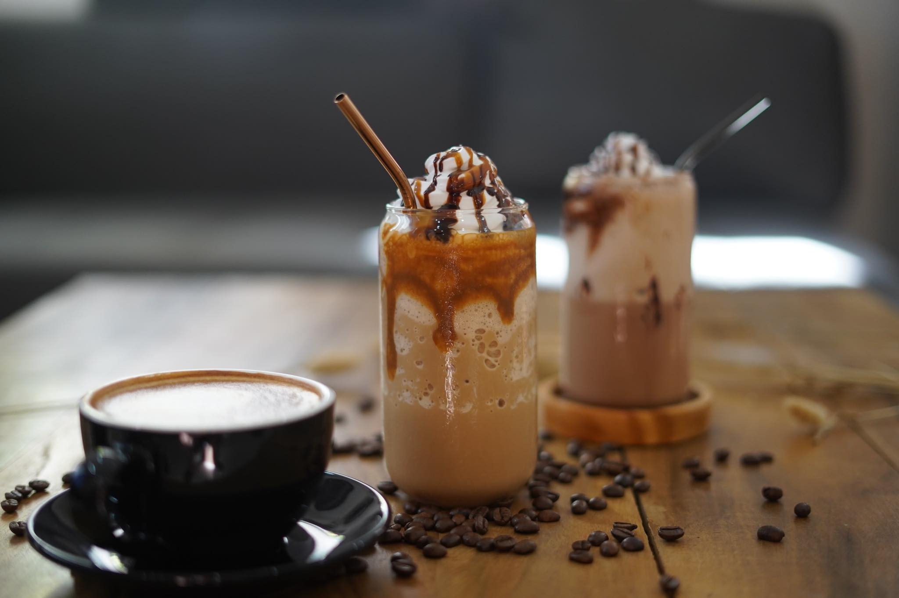
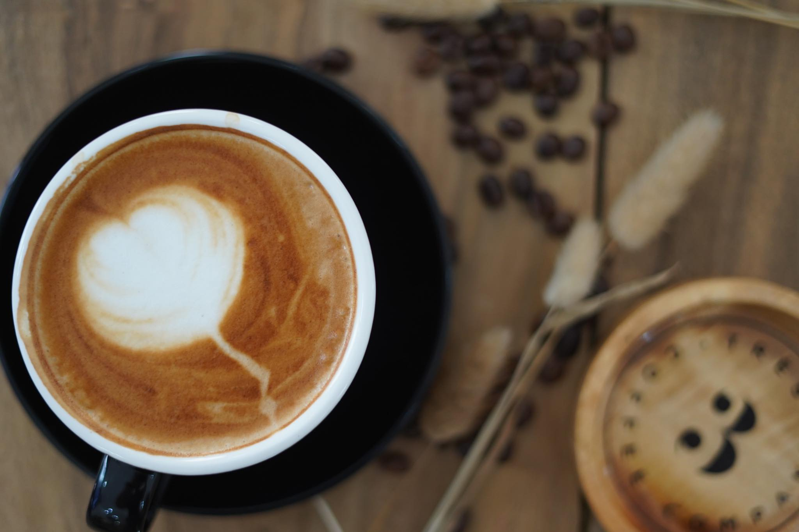

About us
We always wanted to open a café! It was a dream that grew so much stronger while living in Ireland. We both worked full time in the city but our spare time were devoted to travelling around Europe and as many other cities as we could manage, visiting the best cafes for brunch and roasteries that produced some of the best coffee on offer. In 2018, we decided to take the leap and opened Barra Barista. Having opened in 2019, the café has grown from strength to strength, receiving amazing coverage through social media. This is something we are very proud of.
Our super talented BB team work hard every day to deliver what has been our mission since day one; to take the very best of food and coffee, service and atmosphere and bring them together to create the best café experience. Coffee has been a driving force behind BB since day one. Barra Barista is thriving coffeeshop and food space located in a quiet nook in the corner of Dipolog City.
Fast forward almost 3 years and we decided to take it to the next level. Building to what we call “Our little Mona Lisa” - Trés Coffee Co.
With this new master piece, we promise to always focus on promoting the best coffees we can get our hands on.
- Cj & Vince